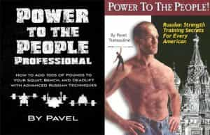
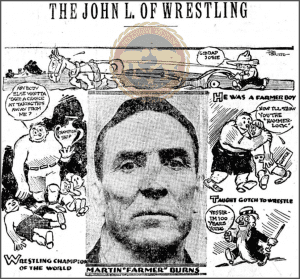

< < < Back
How Effective Are Books On Fitness? – Return Of Kings
We’re all about self-improvement here at Return Of Kings. A man should always be seeking to improve himself in some fashion, and when he has achieved one goal, he should move onto the next one. In short, never rest on your laurels.
Combining this desire for self improvement with the masculine independence and minimalist lifestyle that other writers on this fine website should inculcate in you a desire to improve yourself while being thrifty and relatively solitary. As this article deals with fitness, you know what I’m going to say: personal trainers, or at the very least, the ones at your average commercial gym, should be avoided at all costs. And while most long-term fitness enthusiasts and professionals will likely either train by themselves or have one of the few trainers that knows what he’s doing, most of us have to train alone, especially beginners who have naught but common sense to light his path. But there is another option: books

Yes, books, that simple yet elegant method of transferring knowledge directly to its viewer. There are certainly plenty of books out there pertaining to the various fields of fitness and athletics. But the question remains: how effective is a book in physical training?
As an avid reader of fitness-related tomes (and many others, but that’s neither here nor there), I own many of these books. And I feel that their effectiveness can be judged by grouping them based on “genre”.
Weight Lifting and Calisthenics
When I first started getting into physical culture as a young teenager, I turned to the nearby commercial gym, as most tyros tend to. In that commercial gym, I quickly found myself being attached to a well-meaning jackass who gave me a machine-heavy program that, according to him, would “develop strength, size and endurance.” And like most naive young men, I followed him, developing none of those things, but lining the trainer’s pockets.
Eventually, realizing that I had been lied to, I embarked on a search for enlightenment, coming to the various corners of the internet that deal in such interests. One of the first things that I came across were books that I have repeatedly referred to in these pages, and still consider to be some of the best writing on general fitness out there—the works of men such as Paul Wade and Pavel Tsatsouline. Upon reading books such as Power to the People and the Convict Condidtioning series, and using a bit of common sense, I deduced that these books were superior than the typical tomes on fitness that the commercial gyms would sell at the counter for a few reasons:
One, they advocated a physical philosophy of simplicity and “purity”. Rather than advocating a julienne of exercises; their routines were efficient and targeted all muscles of the body. Two, the credentials of the men were a cut above the average writer: as a maximum security convict and a Spetsnaz veteran (respectively), I knew that these men needed to train their muscles to fighting trim for purposes of survival, rather than “doing curls for the girls”. And third, they referred to the strongmen of old like Maxick and Eugen Sandow, “standing on the shoulders of giants” and opening my eyes to the wider world of fitness writing, much of which I have further consumed.
In general, I would argue that writing on weightlifting and calisthenics are the most effective books on fitness, as these are solitary activities, and the books are typically written by one man speaking to another man. Thus, the techniques there in are written to be easily understood and practiced by the user without a partner.

Martial Arts
As I have repeatedly stated on this website, martial arts in general should be taken with a massive grain of salt—while I’m not so stupid as to say “there’s no point in training any sort of refined fighting style because of adrenaline” (and yes I have seen this boneheaded argument made), I have also spent a substantial amount of time debunking the overly flowery and outright fictitious martial arts styles that many hack authors and film-makers propagate, on my own website as well as my Youtube and Dailymotion channels. Sadly, thanks to martial arts being more or less an unregulated market in the United States, any clown has the full legal right to proclaim himself a “master”.
With that being said, some martial arts books are effective, thoroughly explaining the proper mechanics of a move and/or explaining proper situations in how to use them. While I have a background in “proper” study, I have also utilized books to teach aspects of martial arts that I was not formally taught—such as grappling. And again, I sought out accomplished and legitimate fighters that were decorated in their field: men like Farmer Burns (Lessons in Catch Wrestling and Physical Culture) and Masao Takahashi (Mastering Judo) wrote detailed and efficient books for fighting “in the clinch”, and I have also used Dr. Sang Kim’s books on Taekwondo such as Complete Kicking for learning some of the more exotic kicks that my own background didn’t teach me. And of course I practiced on resisting opponents, some of whom had been wrestlers themselves and thus could shore up my technique.
The most important thing to bear in mind when using a martial arts book is that you MUST practice these techniques against a bag/dummy at the VERY least, and preferably with a sparring partner that will put up a fight. And while this is also the case for any book on physical culture, I would argue that it’s the most important for martial arts—namely because martial arts techniques are, by definition, used in panic situations. In contrast, weightlifting is almost always done in a state of relative calmness—not counting the fake screaming idiots use to “pump themselves up”.

Mindset/Meditation/Etc
Books such as the Kundalini Meditation Manual by Yogi Bhajan, which I have only recently started to use, are simultaneously the most simple and most complicated books on self-improvement to use. They are simple because in very basic terms the advice they give is basically “think really hard about something”, but it is precisely that abstractness that can make them difficult-meditation is a nebulous concept for the best of us to grasp immediately, and in some ways changing one’s mindset and behavior is the most difficult thing anybody can do.
While I admittedly do not have the depth of knowledge in these that I do with the other two topics, I would say that these are hard to grasp but easy to practice once they have been “grokked” in the words of Anthony Burgess: After all, every second of every day of your life will involve you utilizing your mindset. And thus, its difficulty lies in the original understanding.
Conclusion
Looking at these three broad “genres” of male self-improvement books, we can see that they differ greatly in content, but, speaking from a position of experience, I can safely say that to a great extent they are effective, and they can teach you new things, but only if you get one of the relatively few books that aren’t written by armchair alpha males, and only if you diligently practice the information contained within them.
Read More: 4 Effective Fighting Techniques That Every Man Should Know